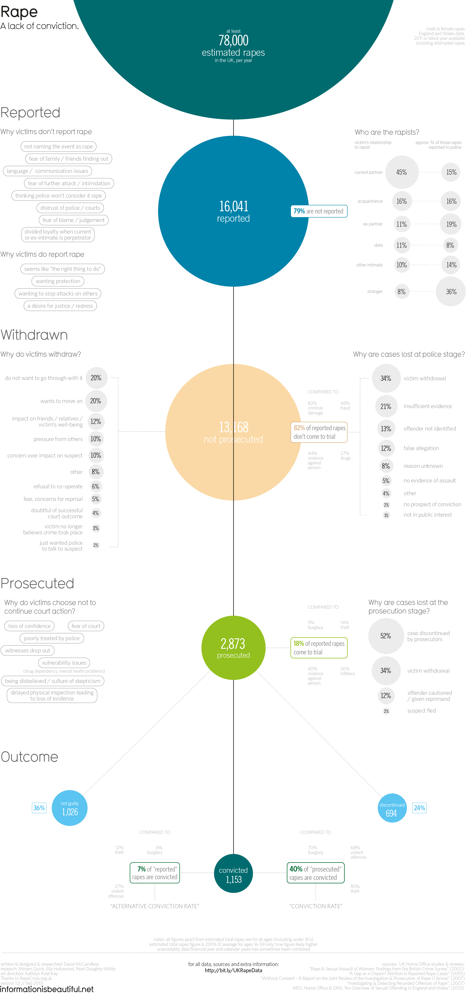

"Information is Beautiful" - Rape: A Lack of Conviction - A Reflection
Information is Beautiful is a site of data visualisations founded and maintained on the principals of infographics - with an aim of distributing knowledge in a beautiful, visual manner. The site houses several categories of visualisations and statistics - both interactive and non-interactive - displaying various aesthetic products of data and fact .
The particular visualsation that I have chosen is "Rape: A Lack of Conviction".
This particular infographic is not interactive, however it concerns a very hefty topic that is prevelant in its extreme in society today. Rape culture and the methods of dealing with rape in the current global society has not progressed significantly enough in regards to the forward movement of all activism and rights advocacy. This infographi depicts data in concerning both male and female incidents and attempts of rape in the region of England and Wales from 2011 onwards.
Clear to it's name, the graph aims to inform primary about the number of convictions in comparison to the number of rapes that occur annually in the UK. The use of colour in the infograph, clearly denotates the main focus of the infograph and gently leads the eye down the display. The grapgh starts detating the total number, and decreases down to the number of convictions - the actual successful dealing of cases of rape in the legal system.
The infograph could easily have been left to it's colour components - but it is the external, off white represented data that is the true interest of this particular visualisation - because it answers the why.
The shockingly low number of convictions, and even actually, the reported number in comparison to the actual happenings of rape in the UK is momumental - and this infographic takes the oppurtunity to educate the viewer on why the rate of conviction is so low. The visualisation takes measure to line up the external contribution information in line (horizontally) with it's area of concern along the main visual line (vertical) - in more directly statistical cases they ised ditted lines to show the furthering of the data. This allow for the viewer/reader to esily associate and gradually contextualise and navigate the graph as it continues further down to the eventual end, or trace back to the orignal source/ grand image of data that the smaller sets make up.
Another fine detail is the way the main point from each sphere going down is highlighted in the colour of the sphere and to the right, in a neat box - taking care to target the general reading direction of the population it is most likely targeting (the UK).In the last spehre it is present on both sides, but still the main statistic takeaway (that most of viewers would understand) is presented to the right.
The only thing I personally feel could have been inpromved is the use of colour for the external/side-data. They could have used a less opaque form of the colour form the main, allowing the side data to be much quicker identified with the main vertical line of data/information. The dotted likes could also have incorporated this colour use and I believe that if done with a pastel intent, would have created a more visually paced infograph - and given some more importance to the data and information on the side that really contextualises the main takeaway of the infograph.
On the flipside, I do think this take may have relayed the graph less dynamically - maybe softening the severity of the statistics, and the importance of the subject at hand.
References